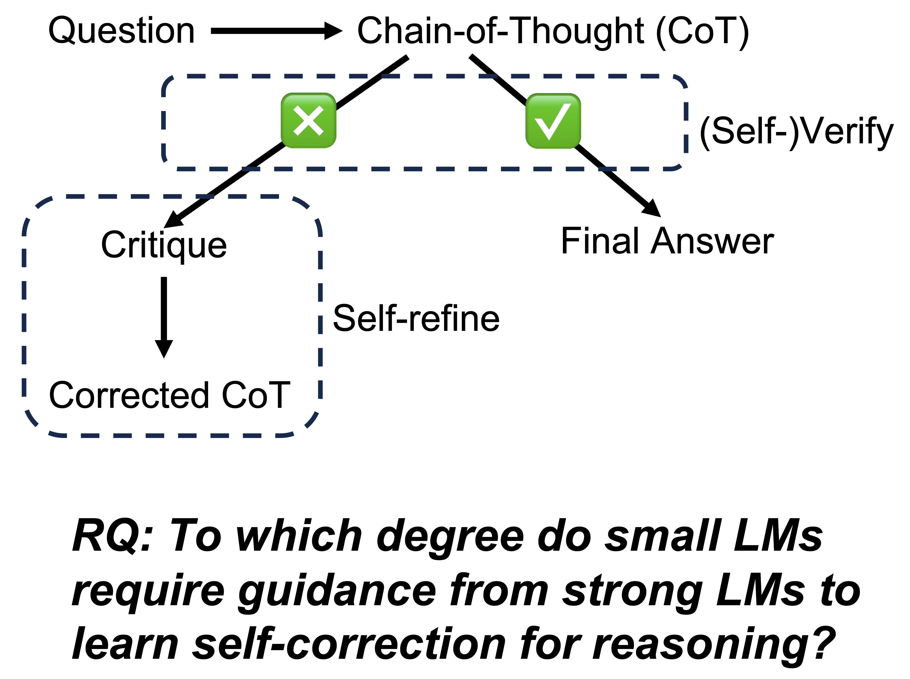
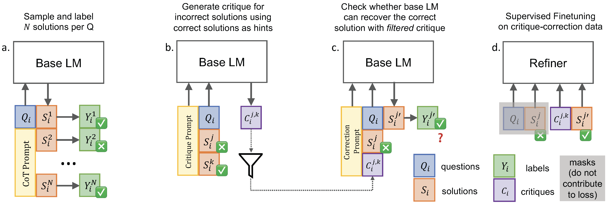
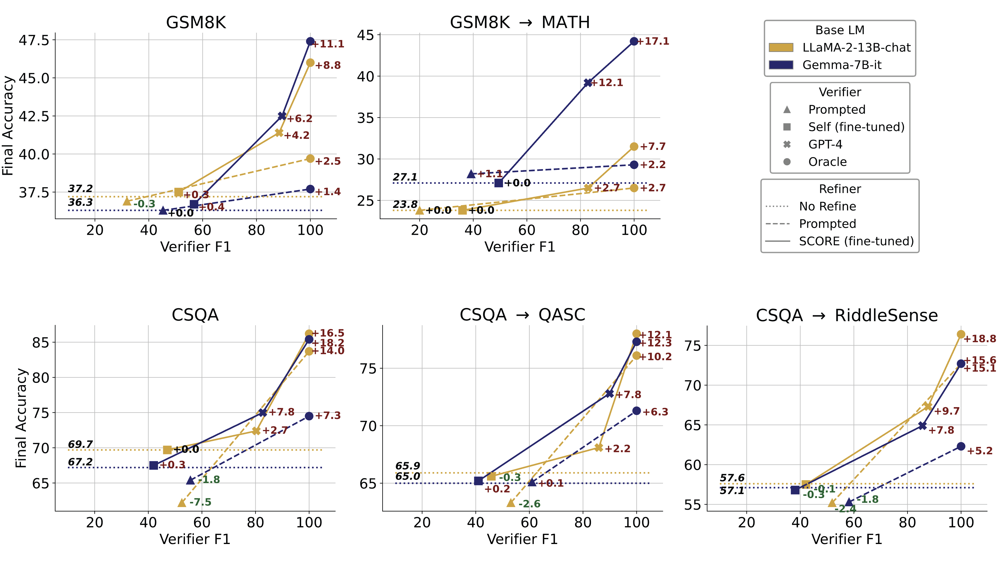

Self-correction has emerged as a promising solution to boost the reasoning performance of large language models (LLMs), where LLMs refine their solutions using self-generated critiques that pinpoint the errors. This work explores whether small (≤ 13B) language models (LMs) have the ability of self-correction on reasoning tasks with minimal inputs from stronger LMs. We propose a novel pipeline that prompts smaller LMs to collect self-correction data that supports the training of self-refinement abilities. First, we leverage correct solutions to guide the model in critiquing their incorrect responses. Second, the generated critiques, after filtering, are used for supervised fine-tuning of the self-correcting reasoner through solution refinement. Our experimental results show improved self-correction abilities of two models on five datasets spanning math and commonsense reasoning, with notable performance gains when paired with a strong GPT-4-based verifier, though limitations are identified when using a weak self-verifier for determining when to correct.
1) We introduce SCORE, a novel pipeline to generate self-correction data from a small LM, and subsequently fine-tune the model to be a self-correcting reasoner.
2) Our method effectively augments the selfcorrection abilities of small LMs on math and commonsense reasoning, when using strong verifiers.
3) To the best of our knowledge, we are the first to demonstrate the potential of small LMs to bootstrap their abilities on self-corrective reasoning without distilling training data from stronger LMs or using human annotation.

Self-Correct := (Self-)Verify + Self-Refine. We decompose the task of selfcorrection into two phases: (SELF-)VERIFY and SELF-REFINE. The LM first generates an initial solution for a reasoning question. A verifier, either the LM itself (intrinsic) or the external signal (extrinsic), then judges the correctness of the initial solution. If correct, the initial solution will be directly used as the final answer. If incorrect, a refiner will revise the solution
Self-Refine := Critique + Correction. We formulate refinement with two steps: the model will first generate a critique for the initial solutions determined as incorrect, followed by a corrected version, in a single pass.

We design an end-to-end pipeline SCORE to collect selfcorrection data generated by small LMs at scale, without any distillation from stronger LMs. The self-generated critiques, after filtering, are used to fine-tune the smaller LM itself to bootstrap its ability to self-correct. Concretely, the SCORE pipeline consists of two stages described below.
Stage 1: Generating and Filtering Critiques. We sample N solutions for each question in the training set by few-shot chain-of-thought prompting a base LM (step a). To enable the base LM to reflect on its incorrect solutions, we include a correct solution for the same question (if exists) in the prompt as a hint (step b). We then filter the self-generated critiques based on their correctness and clarity (step c).
Stage 2: Supervised Fine-tuning of the Refiner. The filtered critiques obtained from stage 1 are used in the next stage for fine-tuning the small LM itself. We train a refiner that generates critiques and corrections conditioned on questions and initialsolutions (step d). We exclude the hints during finetuning so the model won't rely on hints during inference.

We summarize the main findings of our experimental results as below.
1) The critique-correction data collected by our SCORE pipeline enhances the base LM’s capability for self-correction.
2) Our framework improves self-correction for various base LMs on different types of reasoning tasks.
3) The self-correction performance is largely bottlenecked by the verifier rather than the refiner.
4) The enhanced self-correction skills can transfer across different datasets.